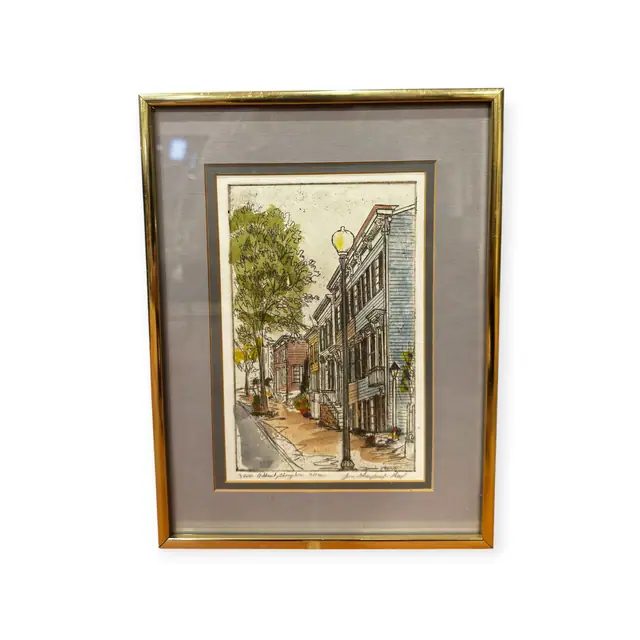
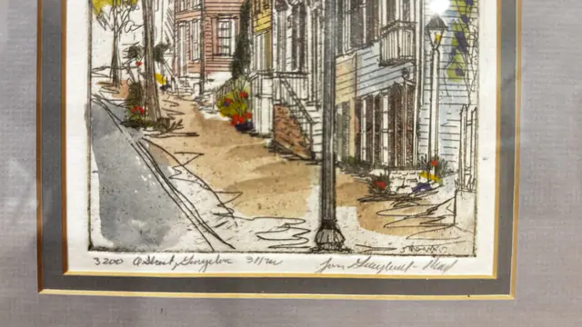
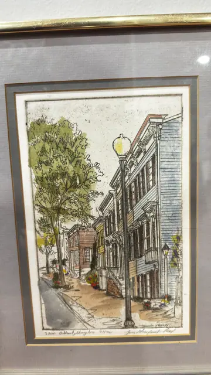
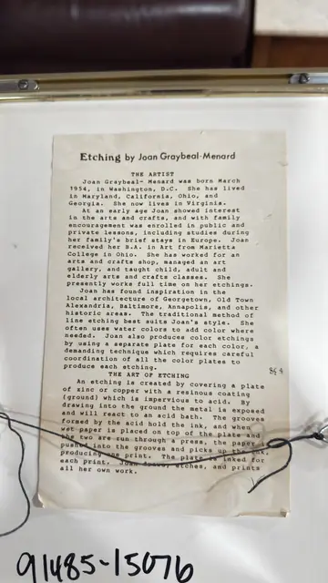

Paintings & Prints
Hand-Coloured Etching 3200 O Street Georgetown, Joan Graybeal-Menard, Numbered Edition, Framed
Joan Graybeal-Menard · late 20th century
Price Upon Request




About the Item
Joan Graybeal-Menard. A crisp line etching of a Washington row-house street, hand-tinted in transparent watercolour: brick and clapboard fronts with stoops, shutters and window boxes recede down a sunlit pavement, a tall street lamp standing in the centre foreground. The line work is loose and calligraphic, the colour applied lightly in ochre for the pavement, soft blue-grey for the sidewalk, warm brick red and fresh green for the trees, with small accents of scarlet and yellow flowers. Printed on cream paper with a clear plate mark, double matted in grey with a gold inner line. Medium: line etching with hand-applied watercolour. Signed in pencil below the plate, lower right, reading "Joan Graybeal-Menard". Edition: 31/100. Accompanied by a certificate: Typed artist's biography sheet headed 'Etching by Joan Graybeal-Menard', tied to the back of the frame, describing the artist and the etching process. Inscribed on the reverse or mount: 3200 O Street, Georgetown 31/100; Etching by Joan Graybeal-Menard; THE ARTIST: Joan Graybeal-Menard was born March 1954, in Washington, D.C. She has lived in Maryland, California, Ohio, and Georgia. She now lives in Virginia.; At an early age Joan showed interest in the arts and crafts, and with family encouragement was enrolled in public and private lessons, including studies during her family's brief stays in Europe. Joan received her B.A. in Art from Marietta College in Ohio. She has worked for an arts and crafts shop, managed an art gallery, and taught child, adult and elderly arts and crafts classes. She presently works full time on her etchings.. Condition: Image and colour fresh; the typed sheet on the back is toned and creased. No visible foxing.
Details
- Creator:
- Joan Graybeal-Menard
- Creation Year:
- late 20th century
- Dimensions:
- Height: 12.5 in (31.75 cm)
Width: 9.5 in (24.13 cm)
outside of frame - Medium:
- line etching with hand-applied watercolour
- Edition:
- 31/100
- Period:
- 20Th
- Condition:
- Offered in the condition shown in the photographs.
- Reference Number:
- VO-202
- Documentation:
- Typed artist's biography sheet headed 'Etching by Joan Graybeal-Menard', tied to the back of the frame, describing the artist and the etching process.
- Gallery Location:
- 3200 O Street, Georgetown 31/100; Etching by Joan Graybeal-Menard; THE ARTIST: Joan Graybeal-Menard was born March 1954, in Washington, D.C. She has lived in Maryland, California, Ohio, and Georgia. She now lives in Virginia.